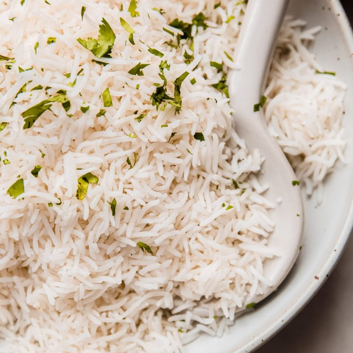

Basmati Rice

Description
Basmati Rice is a healthy carb that can be seasoned and flavored in several ways, and is a great source of fiber.
Ingredients
- 4 cups dried Basmati rice
- 2 cups water
- Sea Salt
- Avocado Oil
- Grass-fed butter
Steps
- On high heat, add 2 cups water and sea salt to large pot
- Add 4 cups dried Basmati rice to the pot
- Cover large pot, bringing water & rice to a boil
- Once boiling, lower heat to medium
- Allow rice to simmer for 25-30 minutes without stirring
- Check if water has boiled away, adding more if necessary
- Once rice has finished cooking, fluff rice with a fork
- Serve Basmatic rice with avocado oil or butter